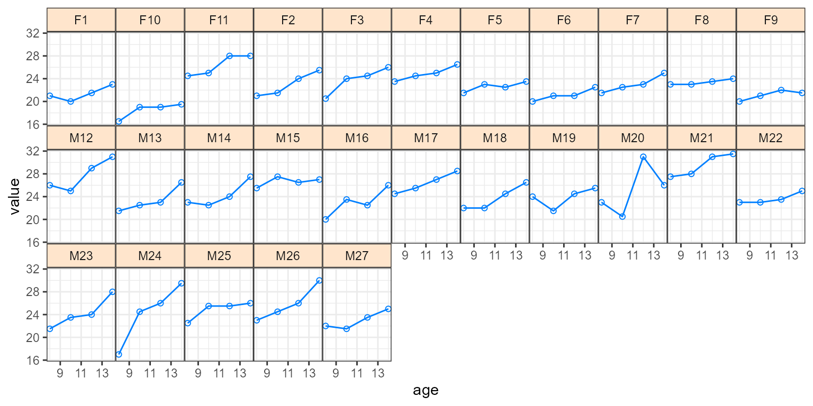
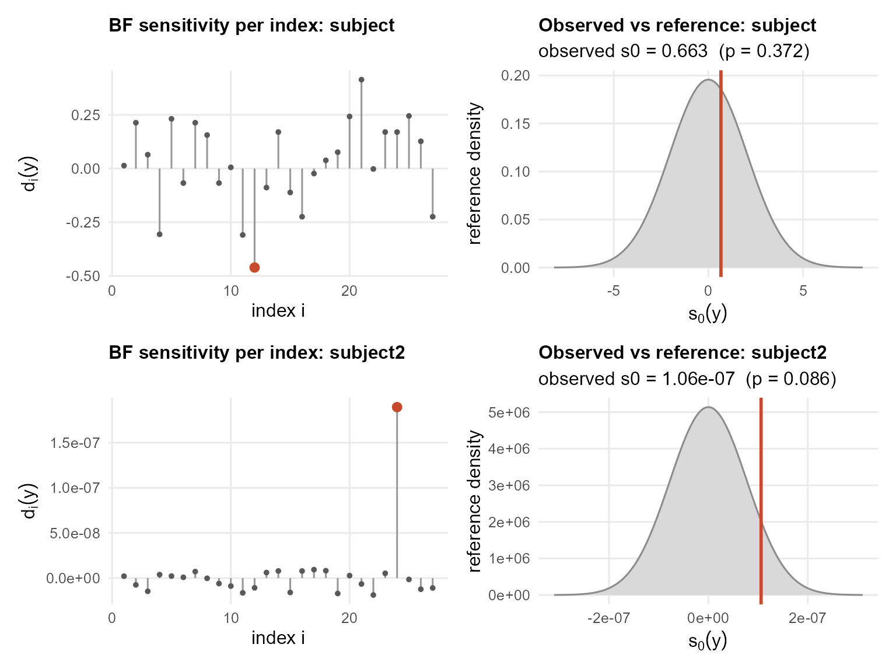
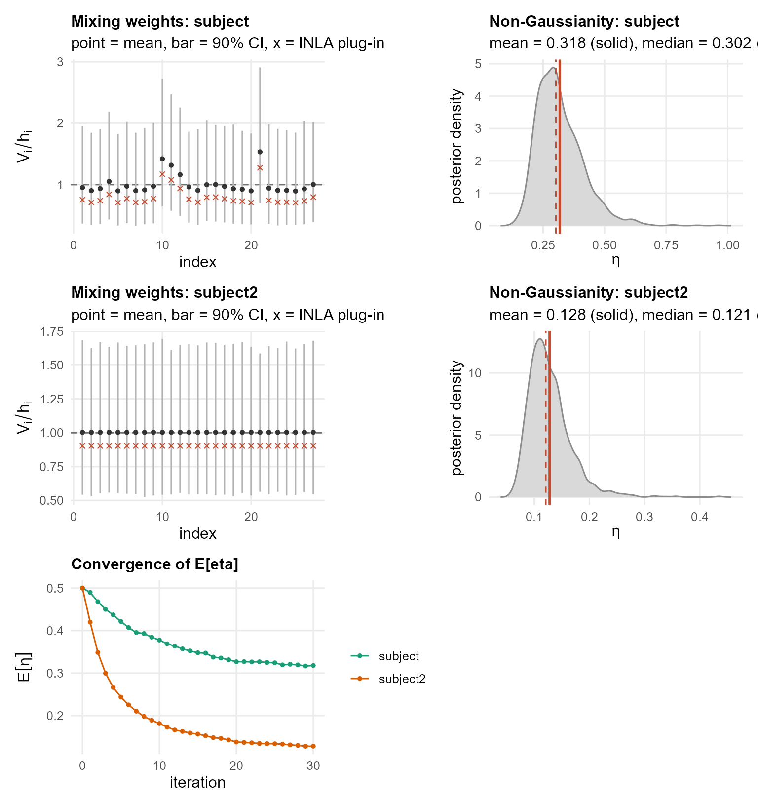

Orthodont records a growth measurement for 27 children
at four ages, together with a sex indicator and time coded two ways. A
quick look at the raw data frame:
Orthodont$age <- c(8, 10, 12, 14)[Orthodont$time + 1]
ggplot(Orthodont, aes(x = age, y = value)) +
geom_line(color = "#007fff") +
geom_point(shape = 1, color = "#007fff") +
scale_x_continuous(breaks = c(9, 11, 13)) +
facet_wrap(~ ifelse(Female == 1, paste0("F", subject), paste0("M", subject)), ncol = 11) +
theme_bw() +
theme(panel.spacing = unit(0, "lines"),
strip.background = element_rect(fill = "#ffe5cc"))
Two kinds of child-to-child variation matter here. Each child starts
at a different height, which is variation in the intercept, and each
child grows at a slightly different rate, which is variation in the
slope. We give every child its own intercept and its own slope, as two
iid random effects:
with
and
across children.
formula <- value ~ 1 + Female + time + tF +
f(subject, model = "iid") + # random intercept, one per child
f(subject2, time, model = "iid") # random slope, one per child
LGM <- inla(formula, data = Orthodont, control.compute = list(config = TRUE))Why make the random effects non-Gaussian? A Gaussian random effect
treats the children as exchangeable draws from one normal distribution.
If a child or two are genuine outliers, with an unusually high baseline
for example, the Gaussian either shrinks them toward the mean and hides
the outlier, or it widens the distribution for everyone to accommodate
them. A non-Gaussian random effect keeps a tight distribution for the
typical children and lets the few outliers stand out.
ng.check() reports one diagnostic per component:
ng.check(LGM, compute.fixed = FALSE)
We see that no substantial evidence of non-Gaussianity was found (large ) for both random effects.
LnGM <- ngvb(LGM)
#> Components: subject [iid], subject2 [iid]
#> ngvb: reached the iteration limit after 30 iteration(s); E[eta] = 0.318, 0.128
plot(LnGM)
After fitting the latent non-Gaussian model we see that the intercept carries more non-Gaussianity than the slope. A couple of children have outlying baselines, while the growth rates are close to Gaussian.
bayes.factor(LnGM, n.samples = 30, seed = 1)
#> Bayes factor (non-Gaussian vs Gaussian): 1.26
#> log10 BF = 0.10 (weak/none)
#> weight ESS = 25.7 of 30 draws